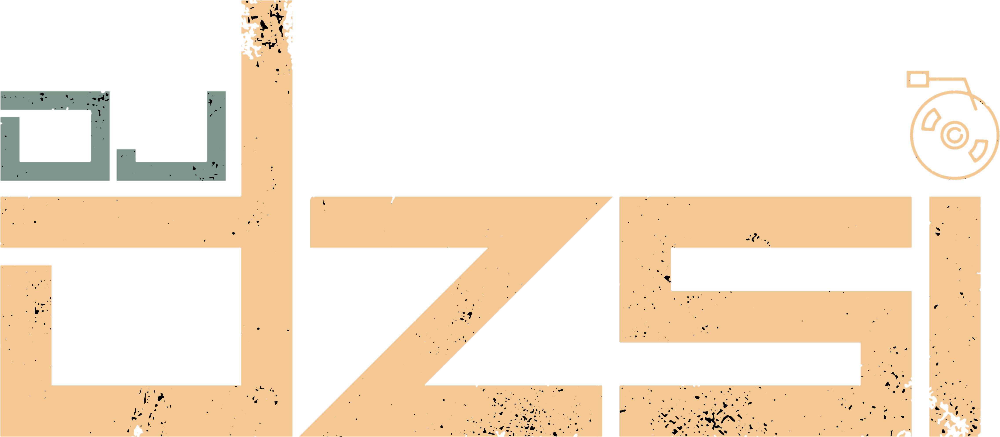
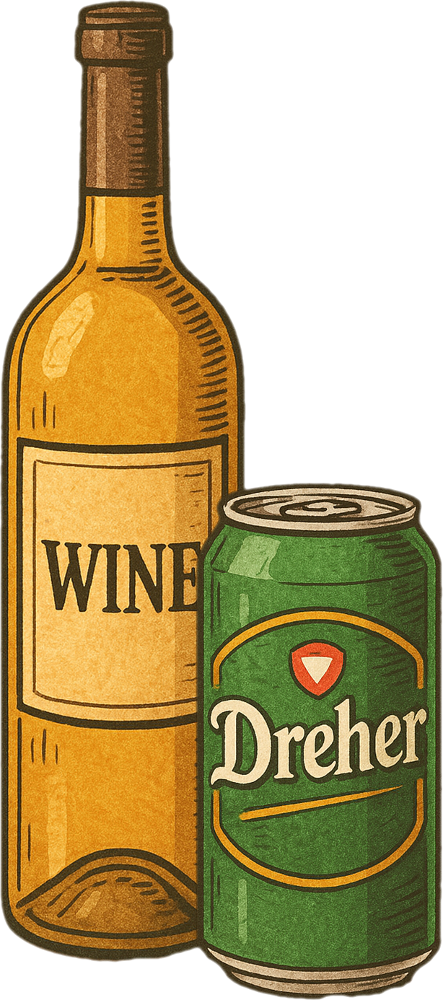

Mikor lesz kolibuli?
A következő koli buli időpontja még egyeztetés alatt áll.
Legnagyobb eséllyel koli bulit legközelebb az Orientációs Hét záróbulijaként tartunk;
Valószínűsíthető időpont:
2025.09.03, szerda
Tervezett kezdés: az eredményhirdetés után


